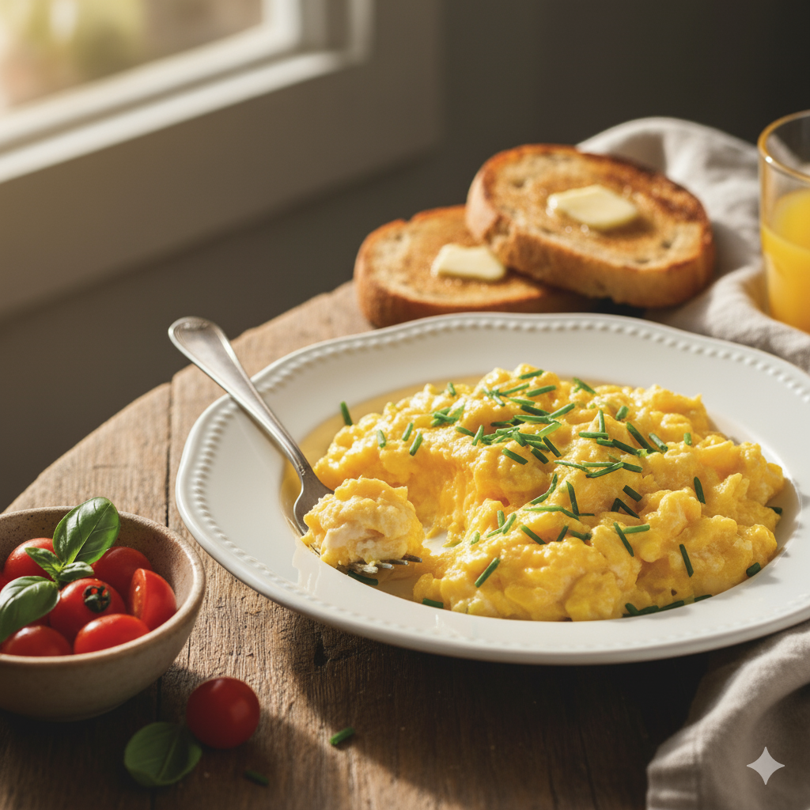

Home
Creamy Cottage Cheese Scrambled Eggs

Description
This dish is a proteïn-rich twist on the widely known breakfast staple.
Easy and quick to make with only 4 ingrediënts, this is the ideal breakfast
for athletes and everyone else.
ingrediënts
- 1 tbsp butter
- 4 large eggs
- 1/4 cup cottage cheese
- 1 tsp chopped chives
- salt & pepper to taste
Steps
- Beat the eggs until smooth.
- Melt the butter in a skillet.
- Add the beaten eggs, let cook
undisturbed until the bottom of the eggs
begins to firm.
- Stir cottage cheese and chives into the eggs.
- Cook and stir until eggs are nearly set.
- Season to taste.